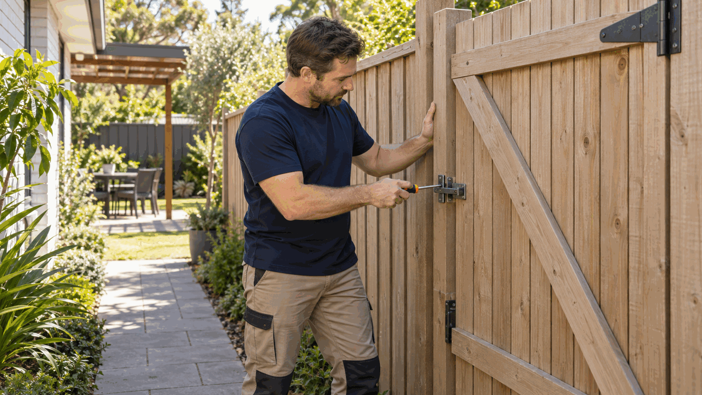

Property and scope
Fence length, height, material and gate requirements
Boundaries and outdoor living
Fence-building enquiries cover new boundary or internal fences, replacement runs, gates and common materials such as timber, metal or composite systems.
Describe this request
What we can coordinate
Fence-building enquiries cover new boundary or internal fences, replacement runs, gates and common materials such as timber, metal or composite systems.
Public price reference
A published Perth or WA market reference for the scope described below.
A$84–$200per linear metre, standard Colorbond or timber paling supply and install
Boundary type, height, gates, demolition, slope, retaining interface and Dividing Fences Act arrangements need confirmation.
Prices shown are Ellis official guide prices. Contact Ellis for a tailored consultation.
What to tell us
Fence length, height, material and gate requirements
Photos of boundaries, slopes, retaining walls and access
Any neighbour agreement, survey information or existing fence issues
Perth metropolitan service area
Ellis reviews requests for fence builders within the Perth metropolitan area. Coverage still depends on the suburb, postcode, scope, timing and an appropriate provider.
Start with one request
Share the task and Perth location. Ellis will confirm the appropriate next step and who would attend.